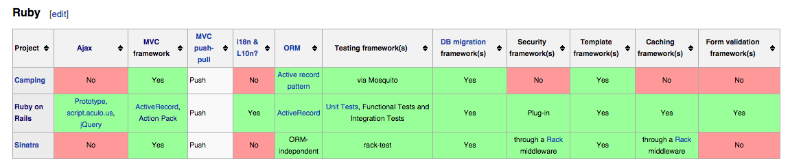

"What sets this framework apart from all of the others is the preference for convention over configuration making applications easier to develop and understand."
Sam Ruby, ASF board of directors
Background: What's a Web Application Framework?
Rails is a web application framework. If you're confused about what that means, don't worry. I was in your shoes quite recently.
A web application framework is simply a set of code and conventions for communicating data and solving the steps a developer would need to communicate with a web server and create a website or resource. Not all websites are the same, but using a framework allows the programmer to avoid reinventing the wheel. We are familiar with coding languages. I picture the web framework as a shell in which the code animal can live and get around. A clam could exist without its shell, but the hard exterior is what gives it form and its ability to interact with the outside environment.
What is Rails?
"Ruby on Rails is astounding. Using it is like watching a kung-fu movie, where a dozen bad-ass frameworks prepare to beat up the little newcomer only to be handed their asses in a variety of imaginative ways."
Nathan Torkington, O'Reilly Program Chair for OSCON
Rails is one of several applications created so that folks could easily build websites with Ruby. By far the most popular and well regarded, Rails was developed by David Heinemeier Hansson in 2003, and has come out in various iterations since.

Courtesy of wikipedia, here are a few other ruby frameworks (projects):
You may be wondering why someone would choose Rails over a different application for Ruby. As someone new to the concept of how websites work, you might think web frameworks are basically all created equal, kind of like furniture. But they're different! Just for Ruby, here is a table of a few differences between three applications for Ruby (don't worry if the details aren't all familiar right now):
One important feature: the "Ajax" part is not a reference to a Greek hero, but an achronym for a combination of web development techniques: Asynchronous JavaScript and XML. Ajax means that web apps can send and receive data from a server in the background without disturbing the experience of the user with the web page.
Not this sort of Ajax:

What makes Rails unique?
Rails isn't just a web application framework, it's also a mildly paternaliztic system of best practices, grown by an avid community of Rails developers. In contrast to some more open-ended frameworks, Rails will assume there's a particular way to solve a problem or organize data. You have fewer decisions to make.
Rails is Opinionated
Its founder and team think they've come up with some good solutions for particular kinds of challenges, and push those conventions. The benefit is that there are well-made solutions readily available to programmers, and that you arrive at a system that is more like interchangeable parts, understood easily by all Rails programmers. I picture IKEA. They make a great product and have basically everything you need to furnish a home or castle. They also have an easy system for constructing furniture: if you build one IKEA book shelf, you could build any, and they keep things simple and streamlined.


The founder DHH has even described Rails as being Omakase: the Japanese practice of having a chef select and suggest the dish you will consume. Another opinionated developer:

Rails is DRY - Don't Repeat Yourself.
Code in rails avoids repetition. Reproducing the same data or information in different places in a program leads to bugginess and instability.
That was a basic introduction to Rails. I'm still becoming familiar myself. Hope you found something useful!
 Twitter
Twitter GitHub
GitHub